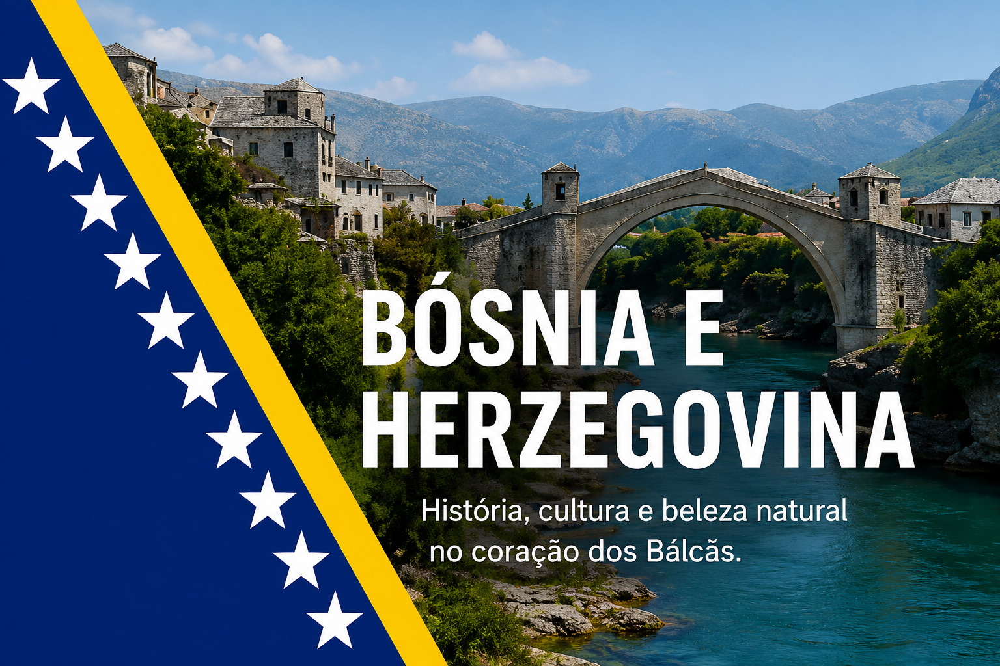

Seleção Nacional
A seleção é administrada pela Football Association of Bosnia and Herzegovina.

O restaurante italiano refinado La Bella Trattoria encanta seus clientes com uma experiência gastronômica sofisticada e acolhedora. Inspirado na tradição italiana, o ambiente combina elegância, luzes suaves e uma decoração clássica que remete a charmosa Itália. Nosso cardápio oferece massas artesanais, risotos cremosos, vinhos selecionados e sobremesas irresistíveis. No La Bella Trattoria, cada detalhe é pensado para transformar cada refeição em um momento especial e inesquecível. Atentendemos de terça a sábado a partir das 16:00 as 22:00, pode nos escontrar no seguinte local.
A seleção é administrada pela Football Association of Bosnia and Herzegovina.
A maior conquista da seleção foi a classificação para a Copa do Mundo FIFA de 2014.
Foi a primeira participação do país em uma Copa do Mundo.
Meio-campista de destaque internacional.
Atuou em clubes como Juventus e Barcelona.
FK Sarajevo
HŠK Zrinjski Mostar
FK Željezničar Sarajevo
Borac Banja Luka
Vinho tinto italiano refinado.